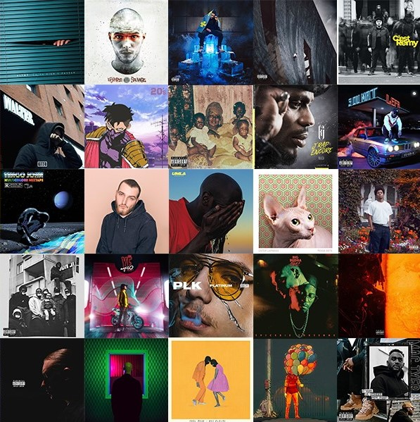

- À PROPOS
- JOBS
- PRESSE
- MUSICIENS ET PODCASTEURS
- EMISSIONS & PODCASTS
- AIDE
Laissez-vous surprendre par la musique
Deezer, c’est toutes les musiques : votre musique, celle des autres, celle qu'on vous recommande et celle que vous partagez.
Elles vous accompagnent partout, tout le temps. Albums, artistes, nouveautés : vous trouverez tout ce que vous cherchez dans
notre catalogue de plus de 73 millions de titres. Deezer révèle votre ADN musical à partir de vos favoris, de vos playlists, mais
aussi à travers nos recommandations éditoriales venant du monde entier.
Deezer c'est votre musique, à votre rythme et accessible à tout moment sur PC, mobile, tablette, support audio et TV
connectés... Just press play !
Lancez-vous. Rejoignez-nous.
Envie d'imaginer le futur
de la musique avec nous ?

Musiciens et podcasteurs
Grâce à Deezer, partagez votre
musique avec le monde entier.
Deezer for developers
Donnez vie à vos projets les
plus fous grâce à notre API.